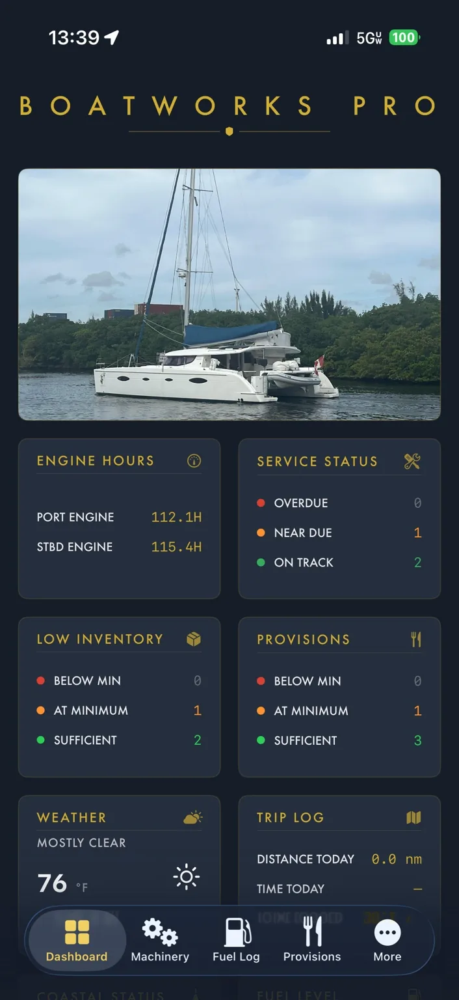
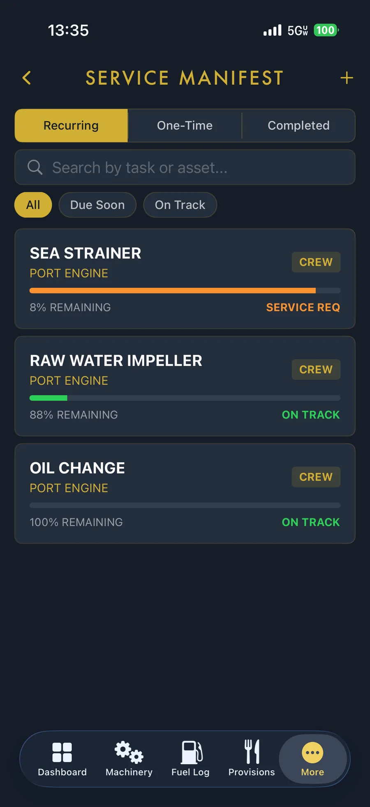
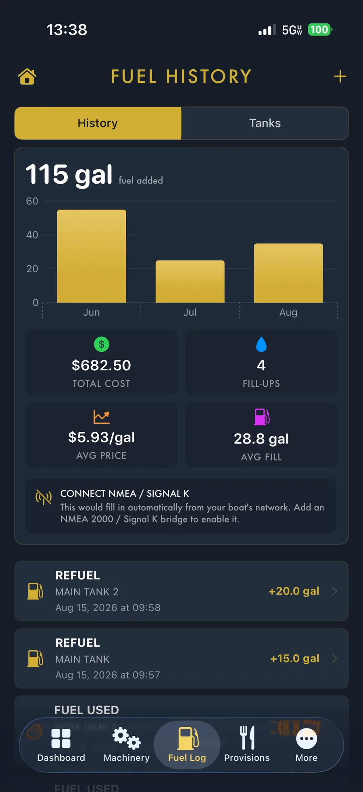
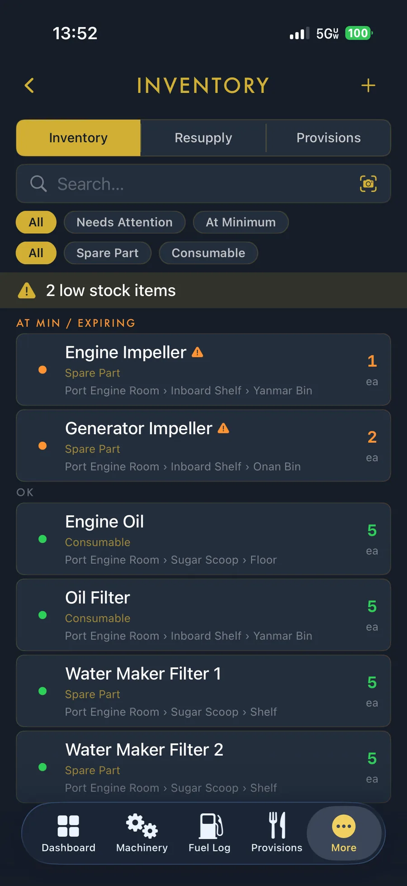
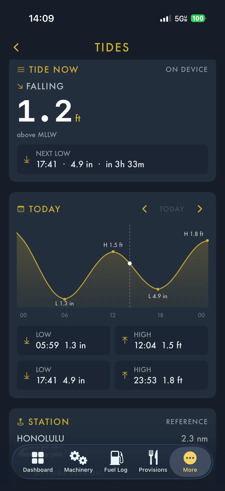
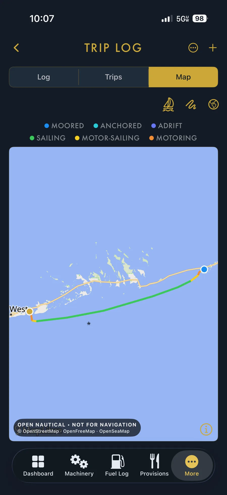
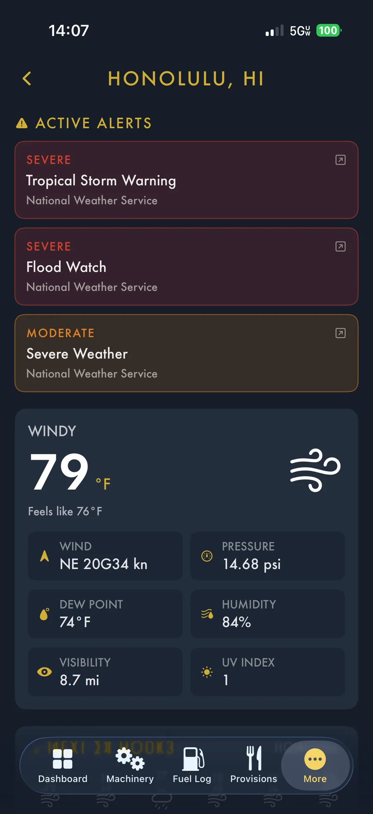

Your boat.
Under control.
BoatWorks Pro keeps maintenance, machinery, fuel, inventory, provisions, tides, weather and trip history organized in one place — with the information you need ready when you need it.


One app for the systems and records that matter.
BoatWorks Pro is designed around day-to-day ownership: keeping machinery maintained, knowing what is aboard, understanding fuel use, monitoring conditions and preserving a useful history of the vessel.
Stay ahead of service instead of reacting to it.
Track recurring maintenance by asset, see remaining service life and separate service-required items from equipment that is still on track.
See the story behind every gallon.
Track refueling, fuel used, fill history and cost — with a path to automatic updates from your boat network through NMEA 2000 / Signal K.

Know what you have — and where it is.
BoatWorks Pro keeps onboard parts and consumables organized by quantity, type and storage location, while surfacing items that need attention.

Tides and weather where they belong: in the boat workflow.
Check tide timing, current height and station data, then move directly into weather details and National Weather Service alerts without leaving your vessel-management environment.


Turn every passage into a useful record.
The Trip Log gives you more than a line on a map. BoatWorks Pro can show the route with operating context such as moored, anchored, adrift, sailing, motor-sailing and motoring segments.
Built to make complex ownership feel organized.
Real BoatWorks Pro screens from the current app experience.

Put your vessel information in one place.
Get BoatWorks Pro on the App Store.